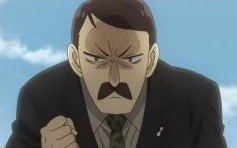
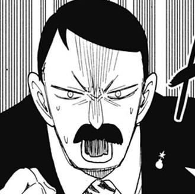
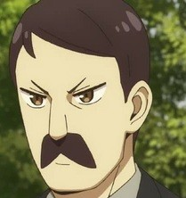
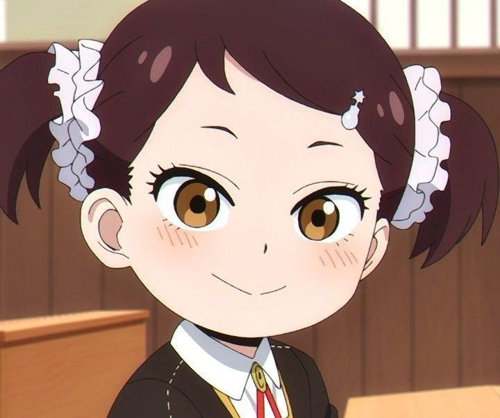
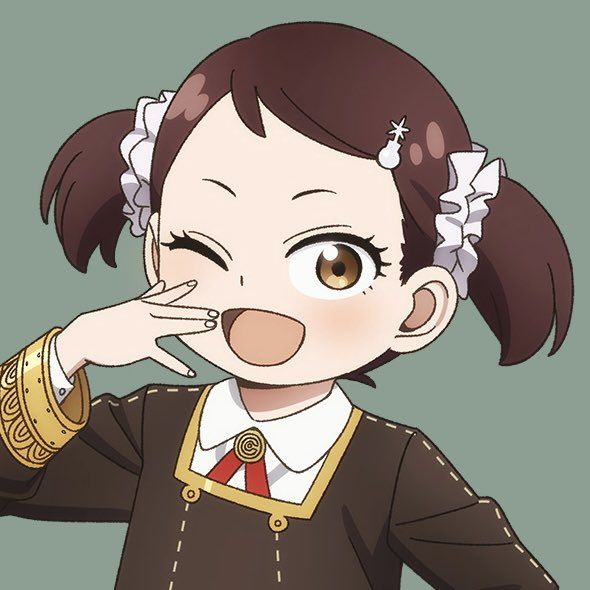
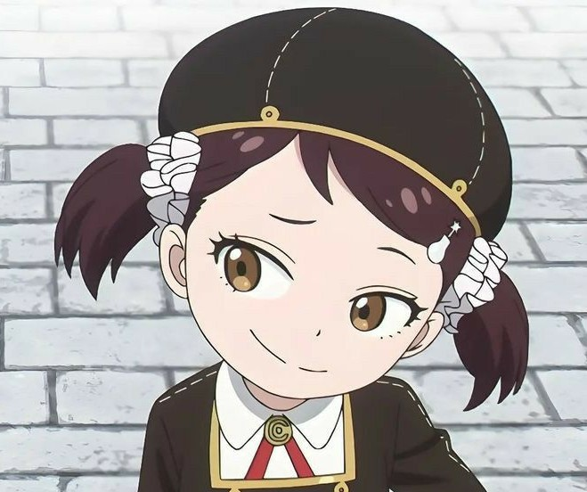

is the father of Becky Blackbell and a prominent figure in Ostanian high society. While he is not a main character, his influence as a titan of industry is felt throughout the series. Byron is the CEO of Blackbell Heavy Industries (also known as the Blackbell Company), one of Ostania's most powerful military manufacturers. In stark contrast to the cold and reclusive Donovan Desmond, Byron is portrayed as a highly social and extremely doting father. He is known for showering Becky with extravagant gifts and rewards. For example, he gifted her their pet dog, Wiesel, as a reward for her efforts at school. Despite his serious role as a CEO, he is occasionally depicted as having a childish or overly emotional side, particularly when it comes to his daughter. He is frequently scolded or kept in check by Martha Marriott, the family's trusted veteran attendant and Becky's caretaker. Byron represents the "industrialist" side of the Ostanian power structure—someone who benefits from the military-industrial complex but remains a devoted, if slightly over-the-top, family man.



She is Anya Forger's best friend at Eden Academy and the daughter of Byron Blackbell, the CEO of the massive defense conglomerate, Blackbell Heavy Industries. She is one of the few people who truly sees Anya for who she is—and likes her for it. Becky is characterized by her extreme maturity (or at least, her attempt at it). Because she grew up watching adult romance dramas and surrounded by luxury, she often acts more like a 25-year-old socialite than a 6-year-old child. Before meeting Anya, Becky was lonely and viewed her classmates as "childish." She initially took Anya under her wing out of pity, but the two quickly became inseparable. Becky is fiercely protective of Anya and is often the first to stand up to Damian or other bullies. She is obsessed with love and "mature" relationships. She frequently gives Anya unsolicited romantic advice and views almost every interaction through the lens of a soap opera plot. Becky is essential to Anya's emotional well-being. While Anya is constantly stressed by her secret mission and Damian's attitude, Becky provides a safe, normal space for her to just be a kid.